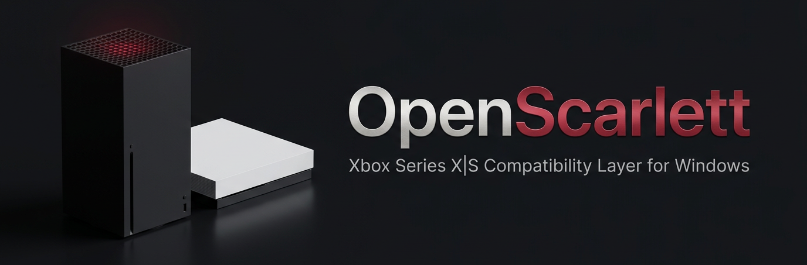

Download Latest Win64 Build
GitHub Repository
Windows CI
Submit Hardware Report
41/41
Automated CTest Passing
30
Shimmed Xbox / GDK DLLs
292/292
Shipping GDK Thunks
6 PCs
Real NVIDIA & AMD GPUs
Core Subsystems
All Areas
Loader
Graphics
Shaders
Memory & IO
Media
GDK Shims
Workloads
UX & Tools
GPU Hardware Coverage
All Hardware Tiers
Verified Only
Testers Needed